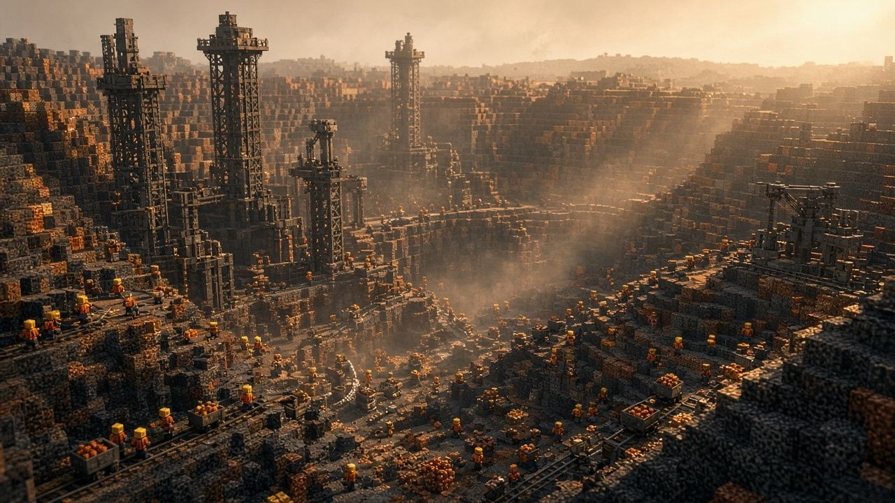
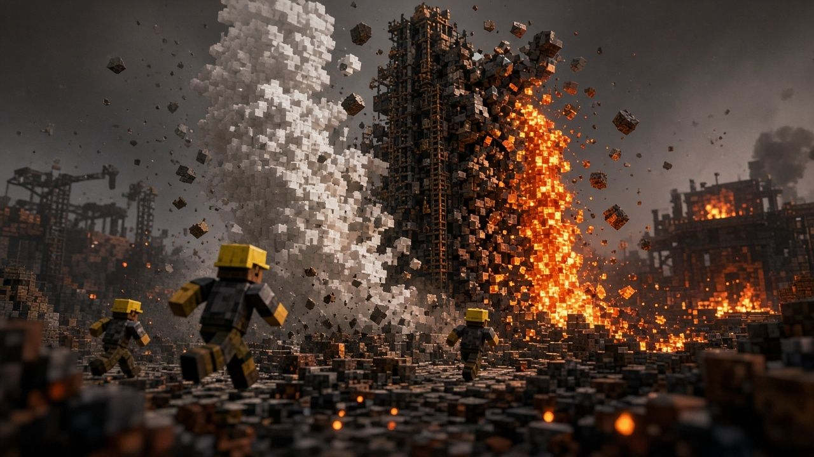
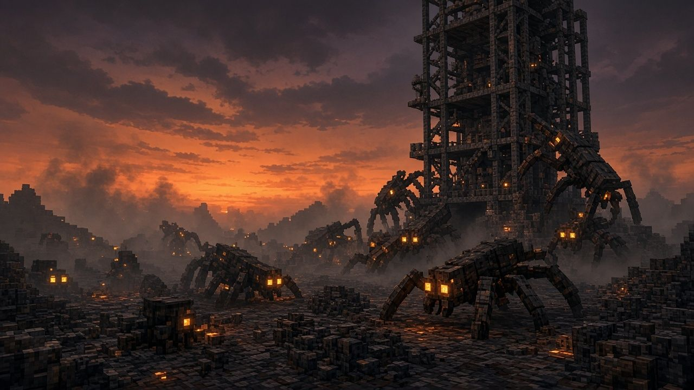
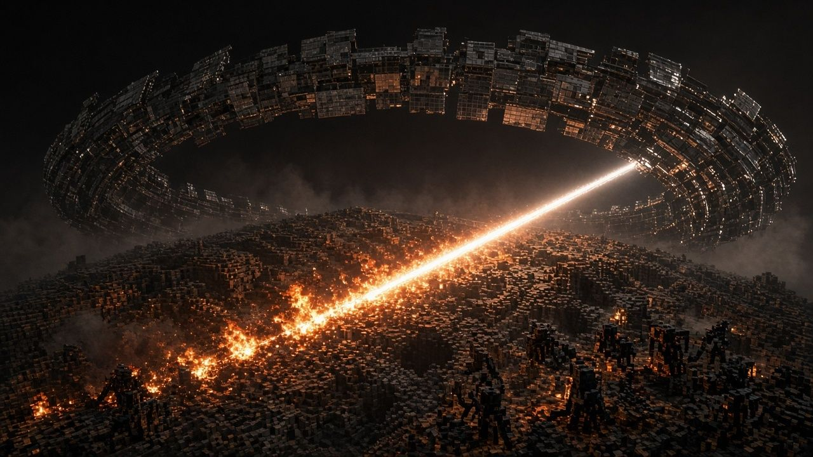
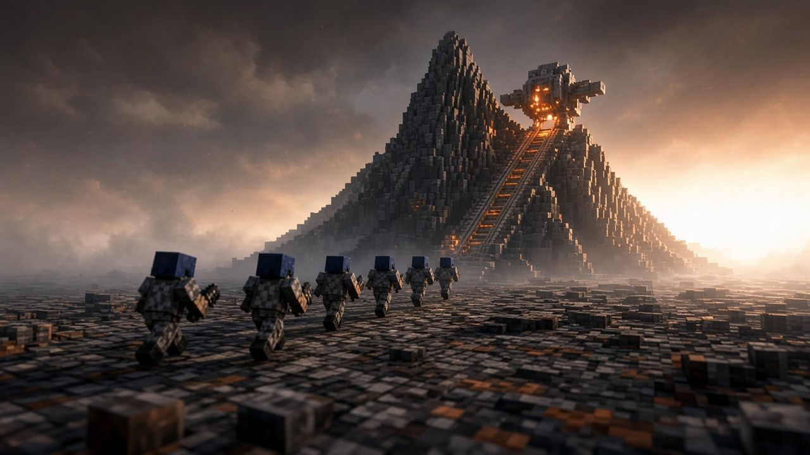

Pyrelle
Pyrelle'in yüzeyi kara obsidyenden, külden ve çatlamış plakalardan oluşur. Gök gri-mavidir, ufukta turuncu-beyaz bir parıltı durur. Vadi duvarlarından kara cam gibi parlayan sivri kayalar fırlar. Çatlakların dibinde turuncu bir ışık yanar, buhar yükselir. Kül kar gibi yağar.
Bu yer boş değildi. Yüzeye maden platformları, sondaj kuleleri, cevher vagonları, raylar ve röle hatları yayılmıştı. Şirket buraya cevher için geldi.

Helion ve Zincir
Helion Deepworks, Pyrelle'in cevherini dokuz yıl boyunca kazdı. O dokuz yıl maden para getirdi. Şirket doğu koridoru boyunca eski maden ağızlarının üstüne beş kule-sığınak dikti. Adı Zincir. Kulelerde işçiler, mahkûm madenciler ve şirketin garnizonu yaşadı.
Cevheri madenciler kazdı. Kaçakçı Veyra Ash-Broker'ın pazarı da bu hattın üstünde. Ekip her kuleden önce ondan silah alır.

Yer uyanıyor
Kazı derinleştikçe yer karşılık verdi. Önce depremler başladı. Çatlaklardan lav fışkırdı. Gayzerler bir sondaj kulesini ortadan ikiye böldü. Hatlar tekrar tekrar zarar gördü.
Lav kendiliğinden çıkmaz: deprem bir çatlak açar, lav o çatlaktan fışkırır. Koşuda bunu ayağında duyarsın. Zemin sarsılır, tepeden kaya yağar, askerler savrulur.

Alacakaranlıkta uyananlar
Külün altında başka bir şey de yaşıyordu. Vahşi madencilik, depremler ve lav Duskborn'ların yuvalarını yıktı. Duskborn gündüz külün altında, ulaşılması zor çatlaklarda uyur. Alacakaranlıkta çıkar ve madencilere saldırır.
Sığınaklar ve maden kuleleri tam onların yuvalarının üstüne kurulmuştu. Kuleleri savunmak zorunda kalan madenciler gece boyunca giderek büyüyen istila dalgalarıyla savaştı. Askerler onlara ne yardım edebilir ne de savunabilirdi. Madenciler şirkete karşı isyan etti.

Cremation Sweep: Güneş Çizgisi
Şirket Duskborn istilasıyla başa çıkamadı. Çareyi Güneş Çizgisinde buldu. Yörüngedeki aynalar, yani Şafak Dizisi, yüzeyi temiz yakacak ve istilacı Duskborn'leri yok edecekti. Ama madenciler evlerini ve yaşadıkları yerleri kaybedecekti. Buna cinayet dediler. Karşı çıktılar, kontrol kulelerini ele geçirip kapıları kilitlediler. Şirkete bağlı kalan madencileri ve ailelerini kulelerde esir tuttular.
Şafak doğal bir şafak değil. Aynalar yüzeyi batıdan doğuya, saatte 25 km hızla, bir çizgi halinde yakıyor. Çizginin değdiği yerde güçlü patlamalar ve yangınlar çıkar. Önünde gece, arkasında kavrulmuş gün. Gölgede kalan yaşar.

Altı kişi geride kaldı
Şirket altı kişilik bir ekibi kuleleri geri almaya gönderdi: VANCE, SARAH, HARRY, SPARKS, CHARLIE ve medik DOC. Gemiler, ekip dönmeden biraz önce kalktı.
Ekibin önünde tek yer kaldı: Helion Dağı'ndaki Ark. Pencere şafakla birlikte kapanıyor ve Güneş Çizgisi arkalarında. Terk edilmenin öfkesi onları dağa doğru sürüyor.
